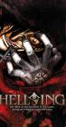

Hellsing Ultimate
List contains: 10 items, 0.2 hours.
Seasons: 1 |
Seasons: 1 |
Stephen Klancher
...has seen 5
...has seen 0.1 hours
...has not seen 0.1 hours

Timeline
Most Recent:
Hellsing V
First Unseen:
Hellsing VI (# 6)
...has seen 5
...has seen 0.1 hours
...has not seen 0.1 hours
Timeline
Most Recent:
Hellsing V
First Unseen:
Hellsing VI (# 6)

Stephen Klancher: January 13, 2018 
Since I still have time on a Funimation account, I thought I'd go back and watch more of this, but really it doesn't seem very interesting.